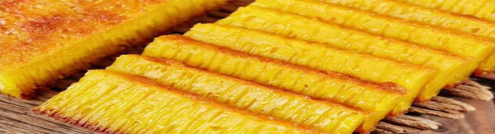
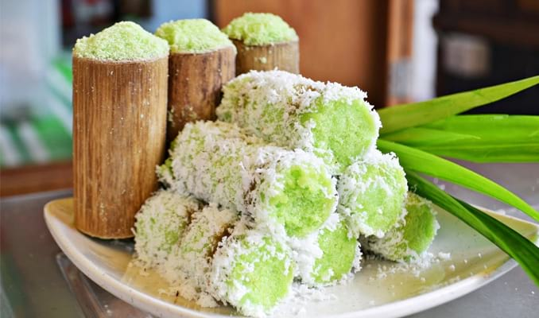

Bika Ambon

Bika ambon adalah penganan khas Medan, Indonesia. Terbuat dari bahan-bahan seperti telur, gula, dan santan,
bika ambon umumnya dijual dengan rasa pandan, meskipun kini juga tersedia rasa-rasa lainnya seperti durian, keju, dan cokelat.
Bika ambon biasanya dapat bertahan dalam kondisi terbaik selama empat hari karena setelah itu kue tersebut mulai mengeras
Bika ambon dikenal sebagai oleh-oleh khas Kota Medan, Sumatra Utara. Di Medan, Jalan Mojopahit di daerah Medan Petisah terdapat sedikitnya 30 toko yang menjual kue ini.
Setiap toko di lokasi ini bisa menjual lebih dari 1.000 bungkus bika ambon perhari apabila menjelang hari raya.
Diperkirakan, sebutan bika ambon muncul dari kebiasaan masyarakat yang dahulu baru mengenal bika yang diproduksi di Jalan Ambon, Medan.
Penyebutan bika ambon akhirnya menjadi tradisi seiring dengan berkembangnya industri makanan ini.
Lemang Khas Medan

Lemang adalah makanan khas Tebing Tinggi. Tebing Tinggi sendiri sekitar 2 jam dari Medan, ehh tapi jangan khawatir lemang juga beredar koq di Medan.
Lemang merupakan makanan dari beras ketan yang dimasak dalam seruas bambu, setelah sebelumnya digulung dengan selembar daun pisang.
Gulungan daun bambu berisi tepung beras bercampur santan kelapa ini kemudian dimasukkan ke dalam seruas bambu lalu dibakar sampai matang di atas tungku panjang.
Lemang lebih nikmat disantap hangat-hangat, dengan campuran selai bahkan durian. Saya biasa makan lemang dengan tape ketan. Ketan dilawan ketan. Duh…sedappnyaa.
Kue Putu Bambu

Suara uap yang menekan cetakan bambu berisi putu terdengar nyaring tuuut...
dan aroma wangi pandan pun menguar di udara. Putu yang putih gurih berisi gula merah,
panas-panas ditaburi gula pasir. Lembut legit, cocok untuk melawan terpaan angin dan air hujan.
Kue pisang, kue ongol-ongol, kue klepon dan kue mayangpun berjajar cantik menerbitkan selera. Mau coba?
Kue Putu bambu adalah salah satu Makanan yg tidak asing bagi masyarakat medan, Maka karna itu kue ini diminati
Oleh banyak Pecinta Kuliner Indonesia